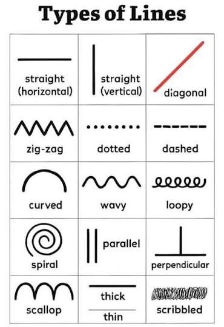
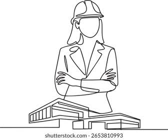

An engineering drawing is a universal graphical language used to communicate technical ideas, designs, and manufacturing requirements. It provides exact geometric specifications—such as shapes, dimensions, and materials—bridging the gap between an engineer's design and the workers or machines that will build the product.

Graphical Language: It transcends spoken languages, allowing engineers, architects, and manufacturers worldwide to interpret a design exactly as intended.
Orthographic Projection: A technique used to represent 3D objects in 2D by flattening them onto distinct viewing planes (typically Front, Top, and Right Side views).
Standardization: Drawings adhere to strict international and national standards (like ISO or ASME) to ensure uniformity
Instruments: Historically, engineers used physical tools like T-squares, set squares, protractors, and compasses. Today, this discipline is called Engineering Graphics and is widely done using Computer-Aided Design (CAD) softwar
Lines: Different types of lines convey different meanings. For example, continuous thick lines represent visible edges, dashed lines represent hidden features, and thin alternating long-and-short lines represent centerlines
Dimensioning: Precise measurements are added to the drawing using arrows, extension lines, and numerical values so manufacturers know the exact scale and tolerances required
Orthographic Views: Separating a 3D object into flat 2D profiles to show all sides without distortion.
Isometric Views: A 3D representation where the object is rotated so that the height, width, and depth are all drawn to the same scale, offering a realistic view of the part.
Section Views: "Cutaway" drawings that expose the internal, hidden features of a complex machine part
Lines in engineering drawing—often called the "alphabet of lines"—are a standardized system of varying widths and styles used to communicate technical information visually. They ensure universal understanding of a design's physical boundaries, internal features, and dimensions


Style: Thick, continuous solid lines.
Use: Represents the physical, visible edges and outlines of an object. These are typically the most prominent lines on the drawing
Style: Thin, evenly spaced dashes
Use: Shows internal or hidden features and edges of an object that are not visible from the current viewing angle
Style: Thin, alternating long and short dashes.
Use: Marks the axis of symmetry for symmetrical parts and indicates the center of circles and holes
Style: Thin, solid lines with arrowheads on the dimension lines.
Use: Extension lines project outward from an object’s edges, while dimension lines specify the actual measurement of the space between them.
Style: Thin, parallel lines spaced at a 45-degree angle.
Use: Indicates where an imaginary cut has been made through an object to reveal internal surfaces (typically seen in cross-sectional views)
Style: Thick lines with arrows at the ends, sometimes consisting of alternating long and short dashes.
Use: Shows exactly where an imaginary cutting plane has passed through a part to create a sectional view
Style: Thin, continuous lines with occasional freehand zigzags or "swiggles.
"Use: Used to shorten a very long object with a uniform shape so it can fit efficiently on the drawing sheet
Drawing is the fundamental practice of creating marks on a surface to express ideas, communicate designs, or capture visual forms. Achieving neatness and precise accuracy requires the use of specialized tools, ranging from traditional graphite pencils and drafting boards to modern digital styluses and software
Drawing Boards: Provide a smooth, flat, and rigid surface for securing your paper.
Drawing Paper: Available in various weights and textures (e.g., Bristol, vellum, or cartridge paper) depending on your medium (pencil, ink, or charcoal).
Clips or Drafting Tape: Used to firmly secure the drawing sheet to the board without damaging the surface.
T-Square / Drafter (Drafting Machine): Guides the drawing of perfectly horizontal lines and provides a straight edge for other instruments.
Set Squares: Available in 30°/60° and 45° combinations to project vertical and precise angled lines.
Scales & Rulers: Used to measure dimensions and create scaled-down representations (common in architectural or engineering drafting).
French Curves: Used for tracing and drawing smooth, irregular curves that cannot be made with standard compasses
Compasses: Designed for drawing circles and arcs of varying radii.
Dividers: Similar to compasses, but featuring two sharp metal points for measuring and stepping off equal distances along a line
Drawing Pencils: Ranging from hard (H-series for fine, precise linework) to soft (B-series for shading and artistic depth). Mechanical pencils with steel nibs are also common for technical drawing to prevent lead breakage
Erasers & Shields: High-quality erasers (like gum or vinyl) remove mistakes cleanly, while a metal erasing shield allows you to erase specific small lines without disturbing nearby lines